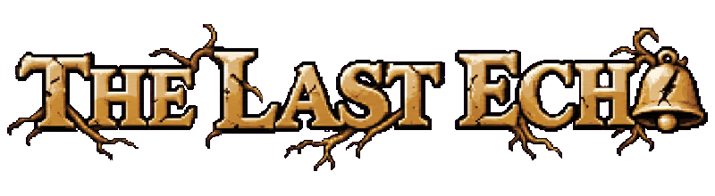

The Last Echo
Continue
New Game
Options
Account
Two saves found — Review
Demo Room
Region 1 (debug)
Region 2 (debug)
Early build
Loading…
Rotate to Play
For the best experience, rotate your phone.
Play anyway